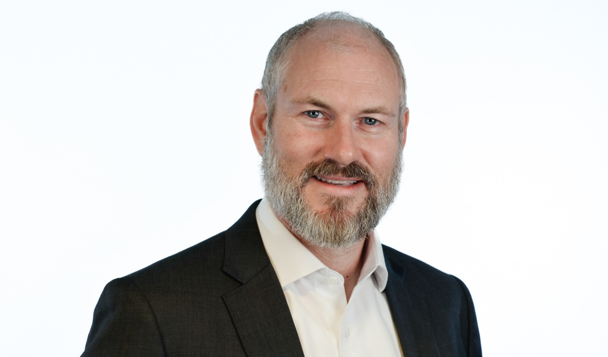

Program- og prosjektledelse
Struktur, prioritering og styring av komplekse initiativer med flere team, leverandører og interessenter.
- Mandat, plan og styringsmodell
- Risikostyring og rapportering
- Leverandør- og kontraktsoppfølging
Strategi · ledelse · gjennomføring
Varde Management AS hjelper virksomheter med å lykkes i komplekse transformasjoner gjennom programledelse, prosjektledelse, endringsledelse og strategisk rådgivning.
Erfaring fra: Vestre Viken · Sykehuspartner · Statnett · Intrum · Asker kommune · Bærum kommune · Posten/Bring · Tietoevry · Capgemini · Equinor

Når oppgaven er krevende
Varde Management kombinerer forretningsforståelse, teknologisk innsikt og praktisk ledelse. Oppdragene tilpasses situasjonen, enten behovet er å etablere retning, stabilisere en leveranse eller bygge en organisasjon som kan lykkes over tid.
Tjenester
Rådgivning og operativ ledelse for virksomheter i endring.
Struktur, prioritering og styring av komplekse initiativer med flere team, leverandører og interessenter.
Ledelse av endringer i teknologi, prosesser og organisasjon, fra målbildet til ny operativ modell.
Forankring, kommunikasjon og innføring som gjør at nye løsninger faktisk tas i bruk og gir effekt.
Midlertidig lederkapasitet for å skape ro, bygge struktur og utvikle team i krevende faser.
Erfaring
Kjetil har ledet leveranser og endringer på tvers av helse, offentlig sektor, energi, finans, retail og teknologi. Erfaringen spenner fra programledelse og organisasjonsbygging til migrering, automasjon, webplattformer og store utrullinger.
Etablering av prosesser, kompetanse, team og styringsstruktur for digital utvikling.
Ledelse av tverrfaglige arkitektmiljøer og oppbygging av kompetansesenter.
Ledelse i driftskritiske programmer med tett kobling mellom teknologi og forretning.
Om Kjetil Næssan
Kjetil orienterer seg raskt i nye organisasjoner og kombinerer nysgjerrighet med sterk gjennomføringskraft. Han har arbeidet som country manager, konsulentleder, teamleder, programleder og prosjektleder i Norge og internasjonalt.
Han har mastergrad i IT og sertifiseringer innen blant annet PMP, PRINCE2, Prosci endringsledelse, ITIL, Scrum, TOGAF og Microsoft Azure Fundamentals.
«God transformasjon krever felles retning, bred forankring, målrettet gjennomføring og tydelig kommunikasjon.»
Kontakt
Ta kontakt for en uforpliktende samtale om situasjonen, ønsket effekt og hvilken kapasitet som kan være riktig.